Editing Poses¶
{kind=link}
Pose Tools.
In 姿态模式, bones behave like objects. So the transform actions (grab/rotate/scale, etc.) are very similar to the same ones in Object mode (all available ones are regrouped in the sub-menu). However, there are some important specificities:
- Bones’ relationships are crucial (see Effects of Bones Relationships).
- The “transform center” of a given bone (i.e. its default 轴心点, when it is the only selected one) is its root. Note by the way that some 轴心点 options seem to not work properly - in fact, except for the 3D游标 one, all others appear to always use the median point of the selection (and not e.g. the active bone’s root when Active Object is selected, etc.).
Selecting Bones¶
Selection in 姿态模式 is very similar to the one in 编辑模式, with a few specificities:
- You can only select whole bones in 姿态模式, not roots/tips...
- You can select bones based on their group and/or layer, through the Select Grouped pop-up menu
Shift-G:- To select all bones belonging to the same group(s) as the selected ones,
use the In Same Group entry
Shift-G-Numpad1. - To select all bones belonging to the same layer(s) as the selected ones,
use the In Same Layer entry
Shift-G-Numpad2.
- To select all bones belonging to the same group(s) as the selected ones,
use the In Same Group entry
The Select Grouped pop-up menu.
Basic Posing¶
As previously noted,
bones’ transformations are performed based on the rest position of the armature,
which is its state as defined in 编辑模式. This means that in rest position,
in 姿态模式, each bone has a scale of 1.0, and null rotation and position
(as you can see it in the 变换 Properties panel, in the 3D视图s,
N).
{kind=link}
An example of locally-Y-axis locked rotation, with two bones selected. Note that the two green lines materializing the axes are centered on the armature’s center, and not each bone’s root...
Moreover, the local space for these actions is the bone’s own one
(visible when you enable the Axes option of the Armature panel).
This is especially important when using axis locking - for example,
there is no specific “bone roll” tool in 姿态模式,
as you can rotate around the bone’s main axis just by locking on the local Y axis
R-Y-Y... This also works with several bones selected;
each one is locked to its own local axis!
When you pose your armature, you are supposed to have one or more objects skinned on it! And obviously, when you transform a bone in 姿态模式, its related objects or object’s shape is moved/deformed accordingly, in real time. Unfortunately, if you have a complex rig set-up and/or a heavy skin object, this might produce lag, and make interactive editing very painful. If you experience such troubles, try enabling the Delay Deform button of the Armature panel - the skin objects will only be updated once you validate the transform operation.
Auto IK¶
The auto IK option in the tool shelf enables a temporary ik constraint when posing bones. The chain acts from the tip of the selected bone to root of the uppermost parent bone. Note that this mode lacks options, and only works by applying the resulting transform to the bones in the chain.
Rest Pose¶
Once you have transformed some bones, if you want to return to their rest position,
just clear their transformations (usual Alt-G/Alt-R/Alt-S shortcuts,
or , W-5, to clear
everything at once... - commands also available in the sub-menu).
Note that in Envelope visualization, Alt-S does not clear the scale,
but rather scales the Distance influence area of the selected bones (also
available through the menu entry - only effective in
Envelope visualization, even though it is always available...).
Conversely, you may define the current pose as the new rest position (i.e.
“apply” current transformations to the 编辑模式),
using the menu entry
(or Ctrl-A and confirm the pop-up menu). When you do so,
the skinned objects/geometry is also reset to its default, undeformed state,
which generally means you will have to skin it again.
Whereas in 编辑模式, you always see your armature in its rest position, in 物体模式 and 姿态模式 you see it by default in its pose position (i.e. as it was transformed in the 姿态模式). If you want to see it in the rest position in all modes, enable the Rest Position button in the Armature tab (编辑模式).
In-Betweens¶
There are several tools for editing poses in an animation.
- Relax Pose ,
Alt-E - Relax pose is somewhat related to the above topic - but it is only useful with keyframed bones (see the animation chapter). When you edit such a bone (and hence take it “away” from its “keyed position”), using this command will progressively “bring it back” to its “keyed position”, with smaller and smaller steps as it comes near it.
- Push Pose ,
Ctrl-E - Push pose exaggerates the current pose.
- Breakdowner ,
Shift-E - Creates a suitable breakdown pose on the current frame
There are also in 姿态模式 a bunch of armature-specific editing options/tools, like auto-bones naming, properties switching/enabling/disabling, etc., that we already described in the armature editing pages - follow the links above...
Copy/Paste Pose¶
参考
Copy and paste pose buttons in the 3D视图 header in 姿态模式.
Blender allows you to copy and paste a pose, either through the Pose menu, or directly using the three “copy/paste” buttons found at the right part of the 3D视图s header:
- to copy the current pose of selected bones into the pose buffer.
- paste the buffered pose to the currently posed armature.
- paste the X axis mirrored buffered pose to the currently posed armature.
Here are important points:
- This tool works at the Blender session level, which means you can use it across armatures, scenes, and even files. However, the pose buffer is not saved, so you lose it when you close Blender.
- There is only one pose buffer.
- Only the selected bones are taken into account during copying (i.e. you copy only selected bones’ pose).
- During pasting, on the other hand, bone selection has no importance.
The copied pose is applied on a per-name basis
(i.e. if you had a
forearmbone selected when you copied the pose, theforearmbone of the current posed armature will get its pose when you paste it - and if there is no such named bone, nothing will happen...). - What is copied and pasted is in fact the position/rotation/scale of each bone, in its own space. This means that the resulting pasted pose might be very different from the originally copied one, depending on: - The rest position of the bones, and - The current pose of their parents.
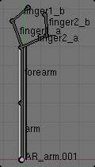
The rest position of our original armature. |
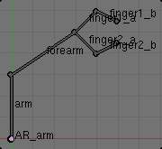
The rest position of our destination armature. |
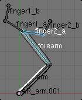
The first copied pose (note that only forearm and finger2_a are selected and hence copied). |
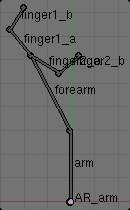
...pasted on the destination armature... |
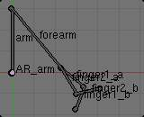
...and mirror-pasted on the destination armature. |
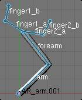
The same pose as above is copied, but this time with all bones selected, ... |
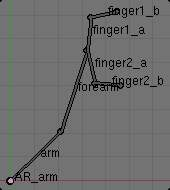
...pasted on the destination armature... |
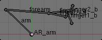
...and mirror-pasted on the destination armature. |
Effects of Bones Relationships¶
Bones relationships are crucial in 姿态模式 - they have important effects on transformations behavior.
By default, children bones inherit:
- Their parent position, with their own offset of course.
- Their parent rotation (i.e. they keep a constant rotation relatively to their parent).
- Their parent scale, here again with their own offset.
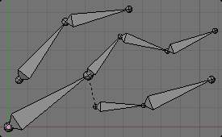
The armature in its rest position. |
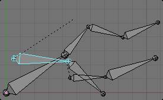
Rotation of a root bone. |
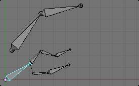
Scaling of a root bone. |
{kind=link}
{kind=link}
{kind=link}
Exactly like standard children objects. You can modify this behavior on a per-bone basis, using their sub-panels in the Armature Bones panel:
{kind=link}
The Armature Bones panel in 姿态模式.
- Inherit Rotation
- When disabled, this will “break” the rotation relationship to the bone’s parent. This means that the child will keep its rotation in the armature object space when its parent is rotated.
- Inherit Scale
- When disabled, this will “break” the scale relationship to the bone’s parent.
These inheriting behaviors propagate along the bones’ hierarchy. So when you scale down a bone, all its descendants are by default scaled down accordingly. However, if you set one bone’s Inherit Scale or Inherit Rotation property on in this “family”, this will break the scaling propagation, i.e. this bone and all its descendants will no longer be affected when you scale one of its ancestors.
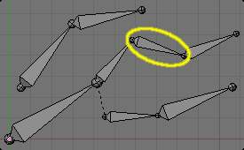
The yellow outlined Inherit Rotation disabled bone in the armature. |
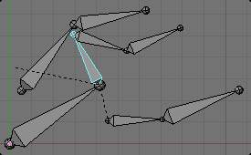
Rotation of a bone with a Inherit Rotation disabled bone among its descendants. |
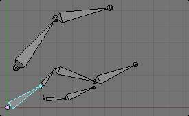
Scaling of a bone with a Inherit Rotation disabled bone among its descendants. |
{kind=link}
{kind=link}
{kind=link}
Connected bones have another specificity: they cannot be translated. Indeed,
as their root must be at their parent’s tip, if you do not move the parent,
you cannot move the child’s root, but only its tip - which leads to a child rotation.
This is exactly what happens - when you press G with a connected bone selected,
Blender automatically switches to rotation operation.
Bones relationships also have important consequences on how selections of multiple bones behave when transformed. There are many different situations which may not be included on this list, however, this should give a good idea of the problem:
- Non-related selected bones are transformed independently, as usual.
{kind=link}
Scaling bones, some of them related.
- When several bones of the same “family” are selected, only the “most parent” ones are really transformed - the descendants are just handled through the parent relationship process, as if they were not selected (see Fig. Scaling bones, some of them related. the third tip bone, outlined in yellow, was only scaled down through the parent relationship, exactly as the unselected ones, even though it is selected and active. 其他wise, it should have been twice smaller!).
- When connected and unconnected bones are selected, and you start a grab operation, only the unconnected bones are affected.
- When a child connected hinge bone is in the selection,
and the “most parent” selected one is connected, when you press
G, nothing happens - Blender remains in grab operation, which of course has no effect on a connected bone.
So, when posing a chain of bones, you should always edit its elements from the root bone to the tip bone. This process is known as forward kinematics (FK). We will see in a later page that Blender features another pose method, called inverse kinematics (IK), which allows you to pose a whole chain just by moving its tip.
Note
This feature is somewhat extended/completed by the pose library tool.